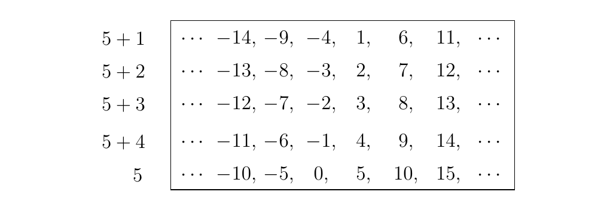

1.5. Left and Right Cosets, Lagrange's Theorem
The result of the previous proof is a special case of a more general theorem we'll come across, know as Lagrange's Theorem. The theorem states that if \(G\) is a finite group and \(H\) is a subgroup, then \(|H| \mid |G|\). That is, the order of \(H\) divides \(G\). This is a remarkable and useful result, aiding proofs as we move on from it. But in order to reach Lagrange's Theorem we first discuss the extremely important concept of a coset of a group.
Before defining a coset, we first recall the definition of an equivalence relation.
An equivalence relation on a set \(G\) is a binary relation \(\sim\) that satisfies the following properties.
- Reflexive. For all \(a \in G\), \(a \sim a\).
- Symmetric. If \(a \sim b\) then \(b \sim a\).
- Transitive. If \(a \sim b\) and \(b \sim c\) then \(a \sim c\).
\textcolor{Plum}{Equivalence classes are a useful concept since they tend to break up a set of objects \(G\) into distinct, disjoint sets \(A_i\). More specifically, they partition \(G\). These sets, \(A_i\), are known as equivalence classes since their criteria for membership requires that \(a \in A_i\) if and only if \(a \sim a'\) for all \(a' \in A_i\). This is a general strategy in mathematics: to define equivalence classes from some equivalence relation to break up a set into disjoint partitions. However, we use the concept of an equivalence class to partition a group \(G\). We use the following relation to do this.} \
\textcolor{blue!90!black!100}{The Relation.}
Let \(G\) be a group and \(H\) be a subgroup of \(G\). If \(a, b \in G\), then the relation \(\sim\) on \(G\) such that \(a \sim b\) if and only if \(ab^{-1} \in H\) is an equivalence relation.
- Reflexive. Observe that \(a \sim a\), since \(aa^{-1} = e \in H\).
- Symmetric. First, if \(a \sim b\) then \(ab^{-1} \in H\). Since \(H\) is a group, we know that \((ab^{-1})^{-1} = ba^{-1} \in H\). Thus by our definition we see that \(b \sim a\), so that our relation is also symmetric.
- Transitive. Now suppose \(a \sim b\) and \(b \sim c\) for \(a, b, c \in G\). Then by definition \(ab^{-1} \in H\) and \(bc^{-1} \in H\). Since \(H\) is a group, and it is closed under products of its elements. Therefore
Thus we see that \(a \sim c\), which proves that our relation is transitive.
As our relation is reflexive, symmetric and transitive, we see that it is an equivalence relation. Note however that we could have defined our relation as \(a \sim b\) if and only if \(a^{-1}b \in H\); such a relation is equivalent to what we just worked with.
First we require a quick definition.
Consider a subgroup \(H\) of \(G\). For any \(a \in G\), we define
to be the right coset of \(H\). We also define
to be the left coset of \(H\). Note that since \(H\) is a group, it is closed under products of its elements. Therefore for any \(h\in H\)
\textcolor{red!80}{Don't confuse the above equality; take special note that equality above is set equality, not term by term equality. Of course we have no idea if \(ha = ah\) where \(h \in H\) for \(a \in G\) unless \(G\) is abelian or we have other information.} \
\textcolor{blue!90!black!100}{The Big Idea of Cosets.}
Now consider the relation introduced earlier, which we proved is in fact an equivalence relation. Consider an equivalence class of an element \(a \in G\), denoted \([a]\). Then we can describe \([a]\) as
Thus the equivalence classes of the elements of \(G\) with respect to some subgroup \(H\) are simply just the right cosets of \(H\). (We could have alternatively defined our equivalence relation to be \(g \sim a\) if and only if \(a^{-1}g \in H\), in which case our above description of \([a]\) would have resulted in being equal to \(aH\). Since both formulations are equivalent, we will simply work with the right cosets of \(H\), namely the sets \(Ha\).)
\begin{figure}[h] \centering
\end{figure} Once we understand cosets, we can understand a lot about a group, because they're really
just equivalence classes! \vspace{0.8cm}
\textcolor{NavyBlue!100!black!100}{Since equivalence classes are mathematical objects which partition a set, what we have is the following beautiful idea: We can take a subgroup \(H\) of a set \(G\) and partition our group \(G\) via the right (or left) cosets of \(H\). This is because our cosets are equivalence classes, and as we said before equivalence classes partition sets which they are defined on.} \ \ Example\ Consider the group \(\ZZ\) and the subgroup \(5\ZZ = \{5n \mid n \in \ZZ\}\). We can calculate the cosets of this \(\ZZ\) with respect to \(5\ZZ\) as
Note that we didn't list any other cosets. Well, that's because these are all of the possible distinct cosets of \(\ZZ\) with respect to \(5\ZZ\). For example, the coset \(5\ZZ + 37\) is equivalent to \(5\ZZ + 2\), since
Thus, any other coset we propose is equivalent to one of the five we listed. This is demonstrated in the figure below.
\begin{figure}[h] \centering

\end{figure}
Note that in this figure we can identify every integer in \(\ZZ\). This assures us that our above list of cosets is in fact complete. In addition, this demonstrates the fact that cosets partition a group. Note that each above coset is disjoint, yet the union of all of the cosets is the entire group \(G\). \ \
As cosets can partition a group, we define \([G:H]\), called the index, to be the number of distinct right (or equivalently left) cosets of \(G\). If \(G\) is finite, then \([G:H]\) is of course finite. However, \(G\) can still be infinite while \([G:H]\) is finite.
If \(G\) is a group and \(H\) is a subgroup, then for \(a, b \in G\), \(Ha \cap Hb = \emptyset\) or \(Ha = Hb\).
This proves the observation we made beforehand in the example with the cosets of \(\ZZ\) with respect to \(5\ZZ\). We saw that the 5 cosets we came up with were distinct and disjoint, which is what this proposition proves is true in general.
This is simply a consequence of the connection between cosets and equivalence relations of \(G\). Equivalence classes form partitions, so by definition they are disjoint. However, equivalence classes can also be equal to one another (namely, if \(a, b\) belong to the same equivalence class \(A\), then \([a] = [b] = A\). This is why equivalence classes, which in our case are cosets, are awesome.) Therefore cosets \(Ha\) and \(Hb\) are either disjoint or equal to each other.
This, however, can be proven directly. Consider such \(Ha\) and \(Hb\). Suppose \(Ha \cap Hb \ne \emptyset\). Then by definition of cosets, there exists a \(h_1\) and \(h_2\) such that \(h_1a = h_2b\). Therefore \(a = h_1^{-1}h_2b\). Since \(H\) is a group, and it is closed under products of its elements, there exists a \(h'\) such that \(h'= h_1^{-1}h_2\). Thus \(a = h'b\). Consequently, we see that
However, recall earlier that \(Hh = H\) for any \(h \in H\). Since \(h' \in H\), we then have that
which proves that \(Ha = Hb\) as well as the proposition.
Let \(G\) be finite and \(a, b \in G\). If \(H\) is a subgroup, and \(Ha\) and \(Hb\) are distinct cosets, then \(|Ha| = |Hb|\). \textcolor{red}{Hence, cosets of \(G\) with respect to some subgroup \(H\) are always of the same size.}
Construct a bijection \(f: Ha \to Hb\) given by \(f(ha) = hb\). Observe that this is surjective. It is also injective since \(hb = hb'\) if and only if \(b = b'\), but since we assumed \(Ha\) and \(Hb\) are distinct, we know by the previous proposition that distinctness implies disjointness. Since we can formulate a bijection the two sets, the sets have the same sizes.
The next theorem, credited to Lagrange, demonstrates the usefulness of studying cosets to study finite groups. Our equivalence classes not only parition our group \(G\), but they are also the same size. Therefore, we can always partition a finite group \(G\) into equally sized cosets.
Let \(G\) be a finite group, and suppose \(H\) is a subgroup of \(G\). Then \(|H|\) divides \(|G|\).
Since \(G\) is finite, there are a distinct set of cosets \(Ha_1, Ha_2, \dots , Ha_n\) which partition \(G\). By Proposition 1.3, each set is of equal size; call it \(k\). Therefore, we see that
Therefore \(|G|\) will always be a multiple of \(|H|\). Or, in other words, \(|H|\) divides \(|G|\).
This is the theorem we said was a more general case of Theorem 1.6. The above theorem enables us to understand all the possible subgroups of any finite group \(G\). In fact, the theorem implies more useful consequences of Theorem 1.7.
Let \(G\) be a finite group and \(H\) a subgroup of \(G\). Then we have the following consequences: \begin{enumerate} \item If \(G\) is a finite group and \(g \in G\), then \(|g|\) divides \(|G|\) and \(g^{|G|} = e\).
\item Let \(p\) be a prime number. If \(G\) is a group of order \(p\), then \(G\) is a cyclic group.
\item If $ \phi :G \to G'$ is a homomorphism between finite groups, then \(|\mbox{ker } \phi|\) divides \(G\) and \(|\mbox{im }\phi|\) divides \(G'\).
\item \(|G| = |H|\cdot[G:H]\) for any subgroup \(H\) of \(G\). \end{enumerate}
\begin{enumerate} \item Consider the cyclic subgroup \(H = \left<g\right>\) of \(G\). By Lagrange's theorem, we know that \(|H|\) divides \(|G|\) isnce \(H\) is a subgroup of \(G\). However \(|g| = |H|\) since \(H\) is cyclic. Therefore \(|g|\) divides the order of \(|G|\). This implies that \(|G| = n|g|\) for some \(n \in \mathbb{N}\). Therefore
which is what we set out to show.
\item If \(|G| = p\), we know by Lagrange's Theorem we know that there are exactly two subgroups of \(G\), namely the trivial group and the whole group \(G\).
Thus let \(g \in G\), where \(g\) is not the identity, and consider the subgroup \(H = \left< g \right>\). Since \(g\) is not the identity, \(H\) is not the trivial group. But since it is a nontrivial subgroup, and the only nontrivial subgroup of \(G\) is itself, we see that our only choice is to let \(H = G\). However, \(H\) is cyclic, which proves that \(G\) is cyclic as well.
\item This result immediately follows from the fact that \(\mbox{ker } \phi\) is a subgroup of \(G\) and \(\mbox{im }\phi\) is a subgroup of \(G'\). Applying Lagrange's theorem leads to the result.
\item For any subgroup \(H\) of \(G\), we know that \([G:H]\) is the number of left or right cosets of \(G\). Since each such set is of size \(|H|\), and because they all together partition \(G\), we see that \(|G| = |H| \cdot [G:H]\). \end{enumerate}